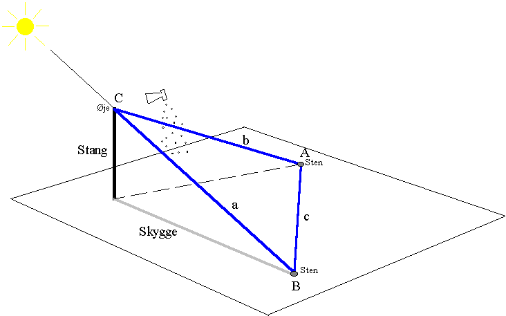
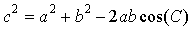

Formålet med denne
øvelse er at bestemme vinklen fra regnbuens centrum
- regnbuen er en del af en cirkel - til selve regnbuen.
Det skal være solskin. En stativstang eller lignende på ca. 1,5 m stikkes lodret ned i jorden. Stangen danner nu en skygge. En sten anbringes på enden af skyggen. En elev kikker nu med:
¨ Det ene øje helt tæt ved stangens øverste ende, og
¨ det andet øje lukket, og
¨ med ryggen mod solen, og
¨ samtidig puster hun med en blomsterforstøver hen over synsfeltet.

Der, hvor hun ser en bid af regnbuen, placeres en sten på jorden. Prøv også at finde andre bidder af regnbuen for at gøre dig klart, hvor regnbuen ses i forhold til en linie gennem stangens øverste ende og stenen for enden af skyggen. Regnbuen ses bedst på en mørk baggrund.
Med et målebånd bestemmes afstanden, a, fra stangens øverste ende til stenen på skyggens endepunkt, afstanden, b, fra stangens øverste ende til stenen hvor regnbuebidden sås og afstanden, c, mellem de to sten. De tre sider a, b og c danner en trekant ABC. Vi er interesseret i vinkel C, og denne vinkel kan findes ved hjælp af cosinusrelationen:

Når I nu alligevel er i gang, så prøv også at finde ud af, hvordan lyset fra regnbuen er polariseret ved hjælp af et polarisationsfilter eller et par Polaroid-solbriller.
Et skema til observationerne kunne fx. være:
| a = | b = | c = | Vinkel C = |
| Polarisation |